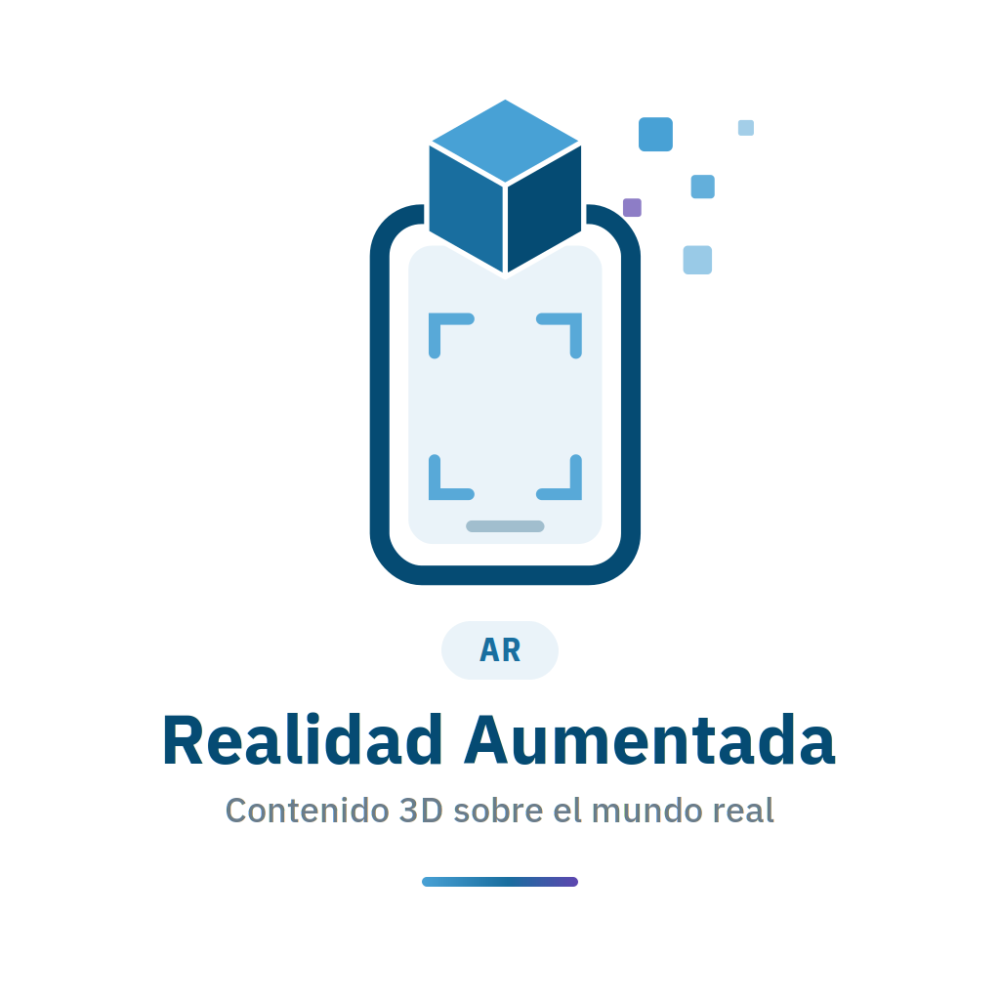

Tarjeta AR de Statware
Apunta la cámara al reverso de la tarjeta para ver el logo en 3D y nuestro catálogo.
Point · Scan · Explore
Apunta la cámara al reverso de la tarjeta para ver el logo en 3D y nuestro catálogo.
Revisa los permisos del navegador y que la página se abra por https://. En iPhone usa Safari; en Android, Chrome.
